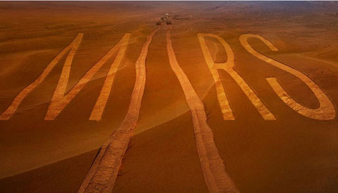

|  |
Mars is the fourth planet from the Sun and the second-smallest planet in the Solar System after Mercury.
In English, Mars carries a name of the Roman god of war, and is often referred to as the "Red Planet" because the reddish iron oxide prevalent on its surface gives it a reddish appearance that is distinctive among the astronomical bodies visible to the naked eye.[16] Mars is a terrestrial planet with a thin atmosphere, having surface features reminiscent both of the impact craters of the Moon and the valleys, deserts, and polar ice caps of Earth. |

|
| Mars has a very thin atmosphere composed mostly of the tiny amount of remaining carbon dioxide (95.3%) plus nitrogen (2.7%), argon (1.6%) and traces of oxygen (0.15%) and water (0.03%). The average pressure on the surface of Mars is only about 7 millibars (less than 1% of Earth's), but it varies greatly with altitude from almost 9 millibars in the deepest basins to about 1 millibar at the top of Olympus Mons. But it is thick enough to support very strong winds and vast dust storms that on occasion engulf the entire planet for months. Mars' thin atmosphere produces a greenhouse effect but it is only enough to raise the surface temperature by 5 degrees (K); much less than what we see on Venus and Earth. |
|
The first spacecraft to visit Mars was Mariner 4 in 1965. Several others followed including Mars 2, the first spacecraft to
land on Mars and the two Viking landers in 1976. Ending a long 20 year hiatus, Mars Pathfinder landed successfully on Mars on 1997 July 4. In 2004 the Mars Expedition Rovers "Spirit" and "Opportunity" landed on Mars sending back geologic data and many pictures; they are still operating after more than three years on Mars. In 2008, Phoenix landed in the northern plains to search for water. Three Mars orbiters (Mars Reconnaissance Orbiter, Mars Odyssey, and Mars Express) are also currently in operation. |

|
Mars has some of the most highly varied and interesting terrain of any of the terrestrial planets, some of it quite spectacular:
|